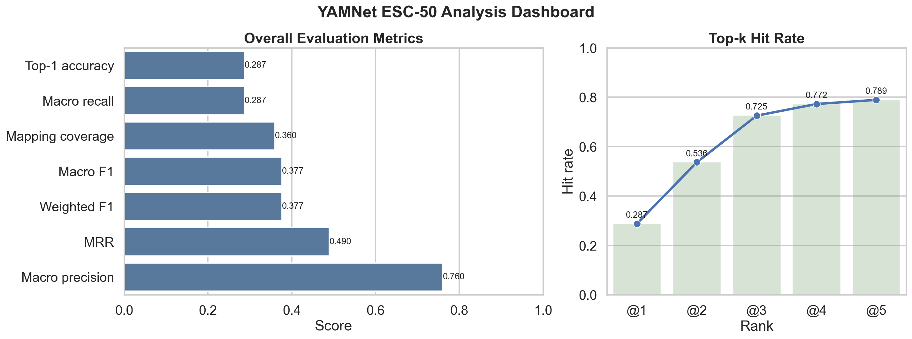
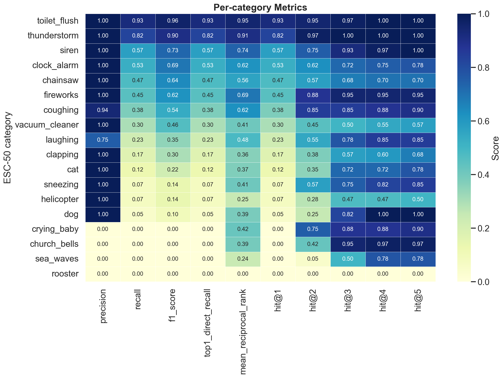
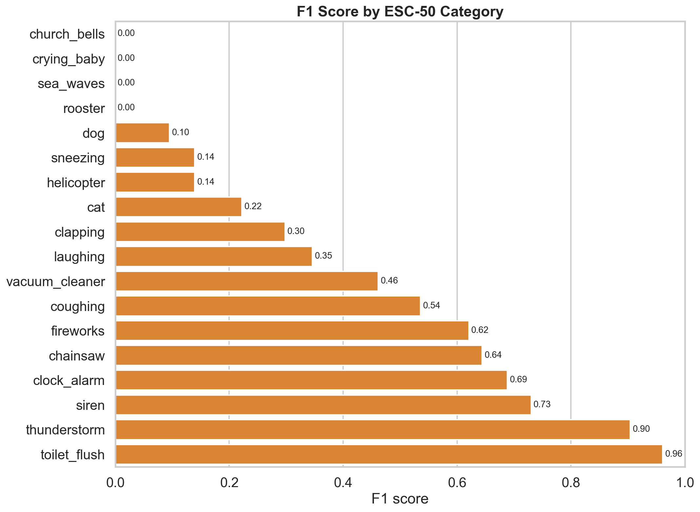
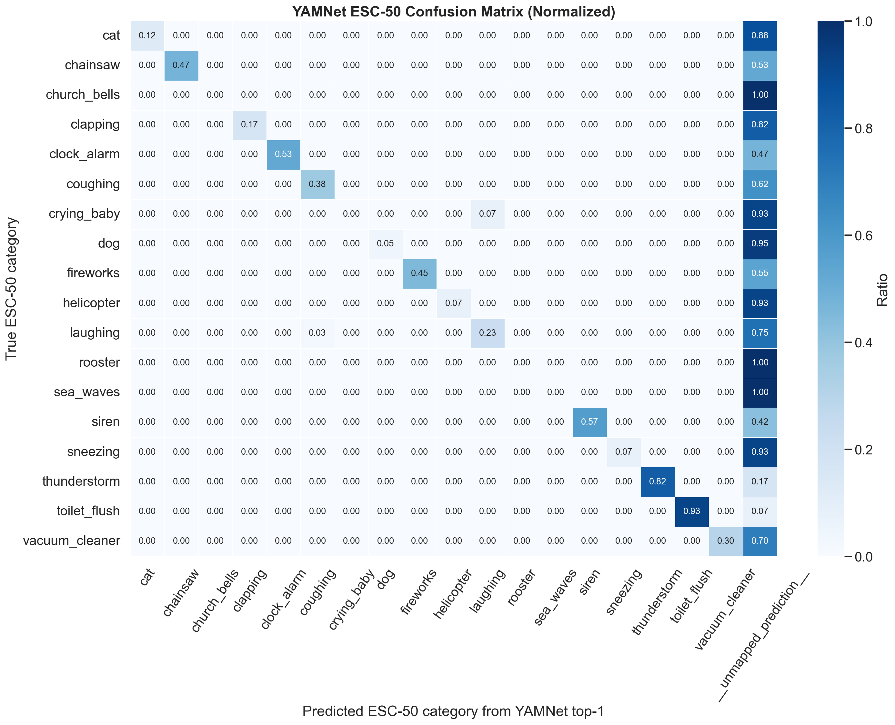
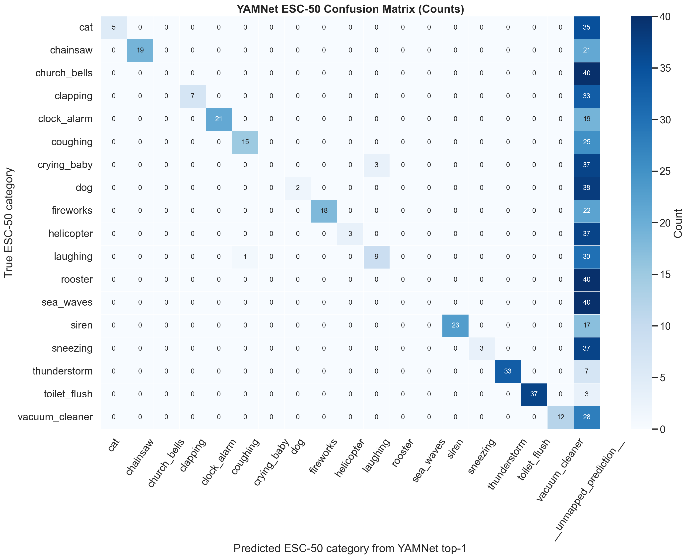
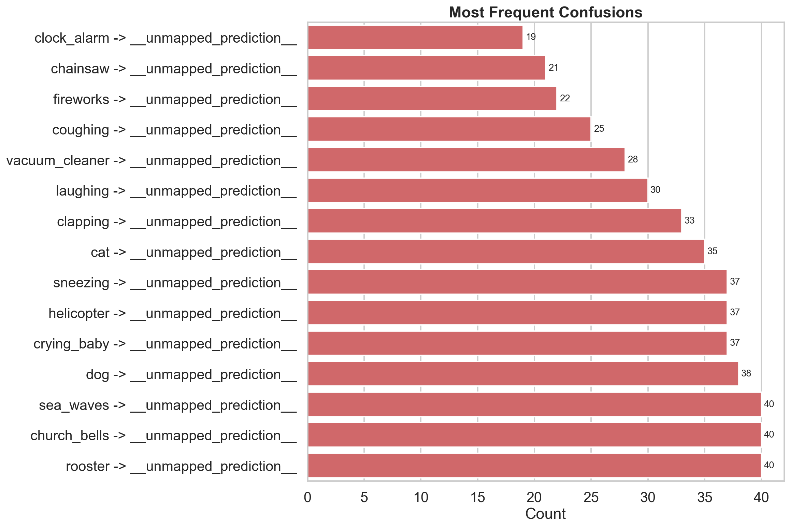
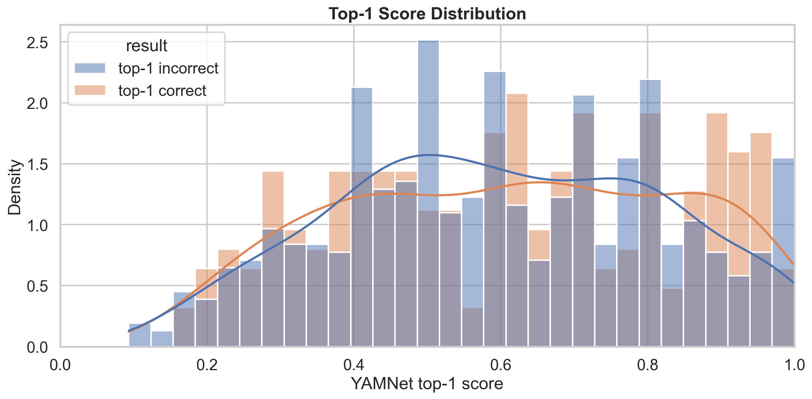

YAMNet ESC-50 Analysis Report
Metrics are computed only for ESC-50 categories mapped in ESC50_TO_YAMNET_LABELS.
Total files
2,000
Mapped files
720
Mapping coverage
36.0%
Top-1 accuracy
28.7%
Macro F1
0.377
Weighted F1
0.377
MRR
0.490
Hit@5
78.9%
YAMNet AudioSet labels and ESC-50 categories are different taxonomies. Improve the mapping dictionary before treating these numbers as final model performance.
Yamnet Metrics Dashboard

Yamnet Per Category Metrics Heatmap

Yamnet Per Category F1

Yamnet Confusion Matrix Normalized

Yamnet Confusion Matrix Counts

Yamnet Top Confusions

Yamnet Confidence Distribution

Overall Metrics
| metric | value |
|---|---|
| Top-1 accuracy | 28.7% |
| Balanced accuracy | 28.7% |
| Macro precision | 76.0% |
| Macro recall | 28.7% |
| Macro F1 | 37.7% |
| Micro F1 | 44.5% |
| Weighted F1 | 37.7% |
| MRR | 49.0% |
| Mapping coverage | 36.0% |
Per-category Metrics
| category | support | precision | recall | f1_score | top1_direct_recall | mean_reciprocal_rank | average_top1_score | hit@1 | hit@2 | hit@3 | hit@4 | hit@5 |
|---|---|---|---|---|---|---|---|---|---|---|---|---|
| toilet_flush | 40 | 100.0% | 92.5% | 96.1% | 92.5% | 95.2% | 72.9% | 92.5% | 95.0% | 97.5% | 100.0% | 100.0% |
| thunderstorm | 40 | 100.0% | 82.5% | 90.4% | 82.5% | 90.8% | 48.3% | 82.5% | 97.5% | 100.0% | 100.0% | 100.0% |
| siren | 40 | 100.0% | 57.5% | 73.0% | 57.5% | 73.8% | 67.5% | 57.5% | 75.0% | 92.5% | 97.5% | 100.0% |
| clock_alarm | 40 | 100.0% | 52.5% | 68.9% | 52.5% | 62.0% | 62.2% | 52.5% | 62.5% | 72.5% | 75.0% | 77.5% |
| chainsaw | 40 | 100.0% | 47.5% | 64.4% | 47.5% | 56.5% | 53.5% | 47.5% | 57.5% | 67.5% | 70.0% | 70.0% |
| fireworks | 40 | 100.0% | 45.0% | 62.1% | 45.0% | 68.8% | 57.5% | 45.0% | 87.5% | 95.0% | 95.0% | 95.0% |
| coughing | 40 | 93.8% | 37.5% | 53.6% | 37.5% | 62.4% | 58.4% | 37.5% | 85.0% | 85.0% | 87.5% | 90.0% |
| vacuum_cleaner | 40 | 100.0% | 30.0% | 46.2% | 30.0% | 40.9% | 49.9% | 30.0% | 45.0% | 50.0% | 55.0% | 57.5% |
| laughing | 40 | 75.0% | 22.5% | 34.6% | 22.5% | 48.1% | 43.0% | 22.5% | 55.0% | 77.5% | 85.0% | 85.0% |
| clapping | 40 | 100.0% | 17.5% | 29.8% | 17.5% | 36.3% | 55.0% | 17.5% | 37.5% | 57.5% | 60.0% | 67.5% |
| cat | 40 | 100.0% | 12.5% | 22.2% | 12.5% | 37.2% | 49.2% | 12.5% | 35.0% | 72.5% | 72.5% | 77.5% |
| sneezing | 40 | 100.0% | 7.5% | 14.0% | 7.5% | 40.7% | 62.6% | 7.5% | 57.5% | 75.0% | 82.5% | 85.0% |
| helicopter | 40 | 100.0% | 7.5% | 14.0% | 7.5% | 24.7% | 65.2% | 7.5% | 27.5% | 47.5% | 47.5% | 50.0% |
| dog | 40 | 100.0% | 5.0% | 9.5% | 5.0% | 38.5% | 77.1% | 5.0% | 25.0% | 82.5% | 100.0% | 100.0% |
| crying_baby | 40 | 0.0% | 0.0% | 0.0% | 0.0% | 42.2% | 57.3% | 0.0% | 75.0% | 87.5% | 87.5% | 90.0% |
| church_bells | 40 | 0.0% | 0.0% | 0.0% | 0.0% | 39.4% | 83.8% | 0.0% | 42.5% | 95.0% | 97.5% | 97.5% |
| sea_waves | 40 | 0.0% | 0.0% | 0.0% | 0.0% | 24.4% | 65.4% | 0.0% | 5.0% | 50.0% | 77.5% | 77.5% |
| rooster | 40 | 0.0% | 0.0% | 0.0% | 0.0% | 0.0% | 53.6% | 0.0% | 0.0% | 0.0% | 0.0% | 0.0% |
Top Confusions
| true_category | predicted_category | count |
|---|---|---|
| church_bells | __unmapped_prediction__ | 40 |
| sea_waves | __unmapped_prediction__ | 40 |
| rooster | __unmapped_prediction__ | 40 |
| dog | __unmapped_prediction__ | 38 |
| helicopter | __unmapped_prediction__ | 37 |
| sneezing | __unmapped_prediction__ | 37 |
| crying_baby | __unmapped_prediction__ | 37 |
| cat | __unmapped_prediction__ | 35 |
| clapping | __unmapped_prediction__ | 33 |
| laughing | __unmapped_prediction__ | 30 |
| vacuum_cleaner | __unmapped_prediction__ | 28 |
| coughing | __unmapped_prediction__ | 25 |
| fireworks | __unmapped_prediction__ | 22 |
| chainsaw | __unmapped_prediction__ | 21 |
| clock_alarm | __unmapped_prediction__ | 19 |